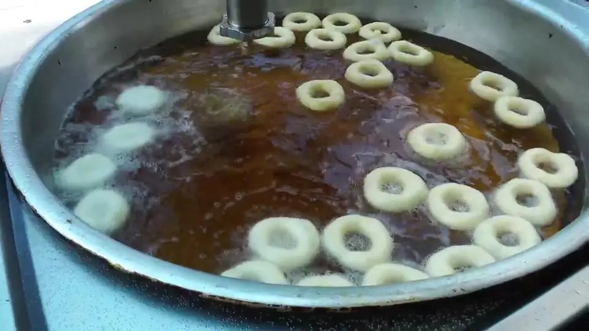

Asesoramiento
Te acompaño a poner en orden tu establecimiento: procedimientos de limpieza, manejo de materias primas, almacenamiento y los registros que conviene llevar.
Consultar asesoramientoNatalia Mendoza · Técnica en control bromatológico
Asesoramiento, capacitaciones y auditorías de Buenas Prácticas de Manufactura (BPM) para comercios y elaboradores de alimentos en La Plata.
01 — Servicios
Desde ordenar lo básico hasta revisar todo el proceso. Contame tu caso y armamos lo que tu comercio necesita.
Te acompaño a poner en orden tu establecimiento: procedimientos de limpieza, manejo de materias primas, almacenamiento y los registros que conviene llevar.
Consultar asesoramientoCapacitaciones para vos y tu equipo sobre manipulación segura de alimentos y Buenas Prácticas de Manufactura, con ejemplos de lo que pasa todos los días en la cocina o la planta.
Consultar capacitaciónRecorro tu establecimiento y reviso el cumplimiento de las Buenas Prácticas de Manufactura: qué está bien, qué hay que corregir y por dónde conviene empezar.
Consultar auditoría02 — Autodiagnóstico BPM
Ocho preguntas, dos minutos. Te muestro dónde estás fuerte, qué conviene mirar primero y qué servicio te sirve más.
03 — Para quién

04 — Cómo trabajo
Por WhatsApp: qué tipo de establecimiento tenés, cuántas personas trabajan y qué necesitás.
Revisamos cómo trabajás hoy para saber qué está bien y qué conviene mejorar primero.
Asesoramiento, capacitación o auditoría, según lo que haga falta, con pasos claros para tu equipo.
“Soy Natalia Mendoza, técnica en control bromatológico. Te ayudo a que tu comercio trabaje con alimentos seguros y con todo en orden.”
05 — Preguntas
Las Buenas Prácticas de Manufactura son las condiciones de higiene, manipulación, almacenamiento y control que tiene que cumplir quien elabora o vende alimentos para que lleguen seguros a la mesa. En Argentina están en el Código Alimentario Argentino.
Depende del tipo de establecimiento, su tamaño y lo que necesites. Escribime por WhatsApp, contame tu caso y te paso un presupuesto.
No. Es una guía rápida y orientativa para ver por dónde empezar. Una auditoría se hace en el lugar y revisa todo el proceso.
Escribime y contame dónde está tu establecimiento, así lo vemos.